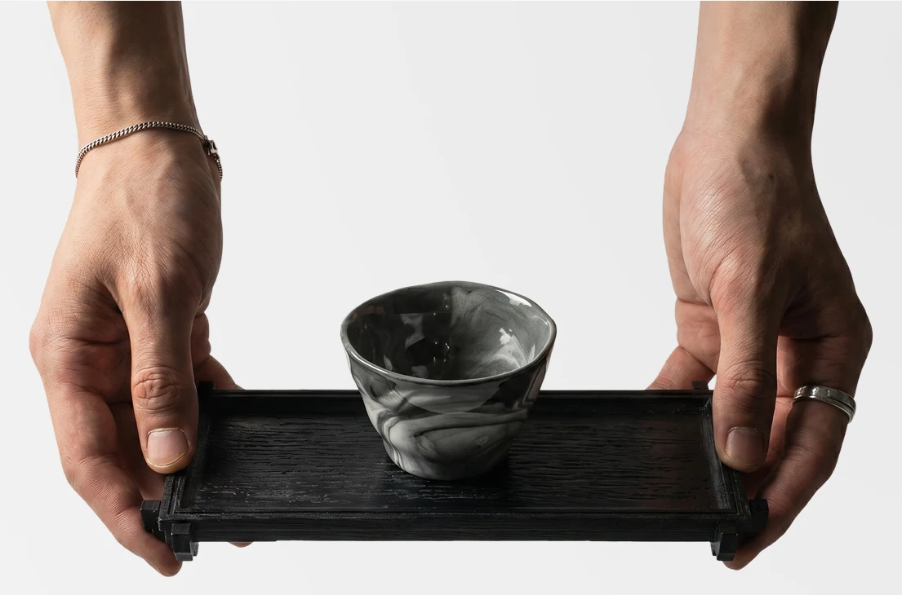
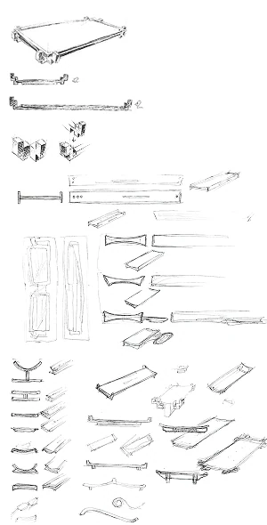
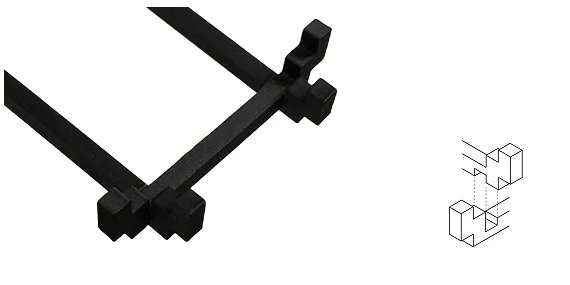
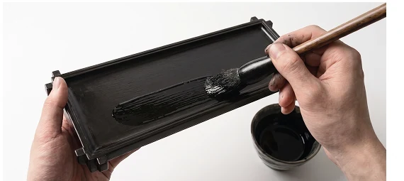
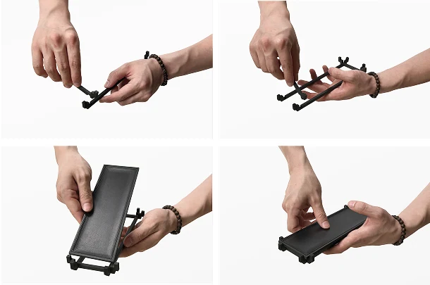
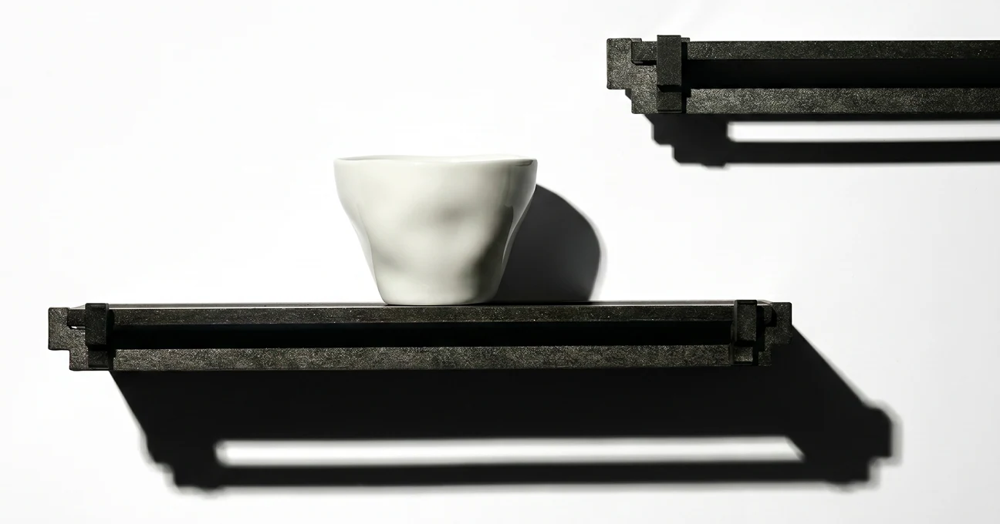

01 / Living Object
사개물림 옻칠 트레이
Sagye Joinery Lacquer Tray
전통 사개물림의 결구 구조를 현대적인 리빙 오브젝트로 재해석한 옻칠 트레이 프로젝트입니다. 단순한 수납 기능을 넘어, 사용자의 손길과 생활 공간 안에서 고유한 물성을 드러내는 사물을 목표로 했습니다.
Process / Structure
결구 방식에서 시작한 형태
사개물림의 교차 구조를 트레이의 지지 방식으로 확장했습니다. 부품이 맞물리는 순서와 손으로 조립되는 감각을 형태의 일부로 남겼습니다.




Object in space
옻칠의 깊은 표면과 결구의 그림자가 일상의 작은 장면을 조용하게 구분합니다.
